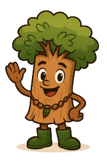

🌱 Guardião da Mata – Missão COP 30 🌱
Bem-vindo! Você é o protetor da floresta designado pela COP 30. Sua missão é salvar a mata!
Olá, eu sou o Jatobinho! Vamos juntos proteger a natureza?

Iniciar Missão